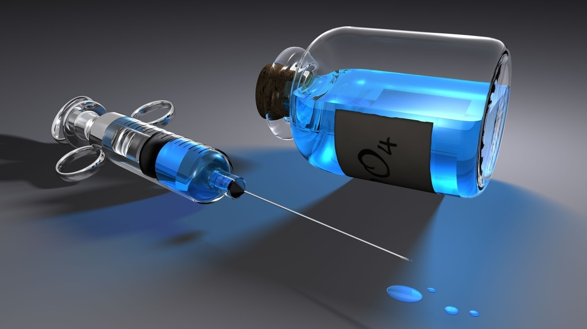
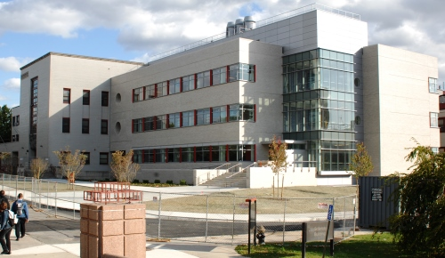

Caption
You can write anything here.

Caption
You can write anything here.

Caption
You can write anything here.
Recent Publications:
Chen Group
- Domaradzki, M. E.; Liu, X.; Ong, J.; Yu, G.; Zhang, G.; Simantov, A.; Perl, E.; Chen, Y. "Triflic Acid Mediated Sequential Cyclization of ortho-Alkynylarylesters with Ammonium Acetate" , Tetrahedron 2020
- Yang, W.; Liu, X; Leung, P.-H.; Li, Y.; Yang, D.; Chen, Y. "Iron-Mediated Ring-Opening and Rearrangement Cascade Synthesis of Polysubstituted Pyrroles from 4-Alkenylisoxazoles" Adv. Synth. Catal. 2020
- Liu, X.; Hong, D.; Sapir, N. G.; Yang, W.; Hersh, W. H.; Leung, P.-H.; Yang, D.; Chen, Y. "Iron- Catalyzed Transfer Hydrogenation in Aged N- Methyl- 2- pyrrolidone: Reductive Ring- Opening of 3, 5- Disubstituted Isoxazoles and Isoxazolines" J. Org. Chem. 2019
- Yang, W.; Chen, Y.; Yao, Y.; Lin, Q.; Yang, D. "Iron-Promoted Reductive Ring- Opening and Isomerization Reactions of C4- Alkynylisoxazoles Leading to 2- Alkynylenaminones and Polysubstituted Furans" Adv. Synth. Catal. 2019
- Li, X.-R.; Chen, H. J.; Wang, W.; Ma, M.; Chen, Y.; Li, Y.; Pullarkat, S. A.; Leung, P.-H. "Palladacycle promoted asymmetric hydrophosphination of α,β-unsaturated sulfonylfluorides" J. Organomet. Chem. 2019, 899, 120912.
- Wen Yang, Yu Chen, Yongqi Yao, Xin Yang, Qifu Lin, and Dingqiao Yang "ICl/AgNO3 Co-Catalyzed Radical Oxidation of Diaryl- and Alkylarylalkynes into 1,2-Diketones" J. Org. Chem. 2019
Jang Group
- Ning Chen, Murali Devi, Seogjoo J. Jang "Computational modeling of charge hopping dynamics along a disordered one-dimensional wire with energy gradients in quantum environments" Journal of Chemical Physics 153, 054109 (2020).
- Seogjoo J. Jang "Dynamics of Molecular Excitons" Nanophotonics Series (Elsevier, Amsterdam, 2020).
- Lei Yang and Seogjoo J. Jang "Theoretical investigation of non-Förster exciton transfer mechanisms in perylene diimide donor, phenylene bridge, and terrylene diimide acceptor systems" Journal of Chemical Physics 153, 144305 (2020).
- Seogjoo J. Jang "Fourth order expressions for the electronic absorption lineshape of molecular excitons" Journal of Chemical Physics 151, 044110 (2019).
- Marta Kowalczyk, Ning Chen, Seogjoo J. Jang "Comparative Computational Study of Electronic Excitations of Neutral and Charged Small Oligothiophenes and Their Extrapolations Based on Simple Models" ACS Omega 2019, 4, 5758-5767.
- Seogjoo J. Jang "Effects of Donor-Acceptor Quantum Coherence and Non-Markovian Bath on the Distance Dependence of Resonance Energy" J. Phys. Chem. C 2019, 123, 5767-5775.
Liu Group
- Jianbo Liu, Wenjing Zhou, Steven D. Chambreau, Ghanshyam L. Vaghjiani "Computational study of the reaction of 1-methyl-4-amino-1,2,4-triazolium dicyanamide with NO2: From reaction dynamics to potential surfaces, kinetics and spectroscopy" J. Phys. Chem. B. 2019
Pathak Group
- Dibyendu Dana and Sanjai K.Pathak "A review of small molecule inhibitors and functional probes of human Cathepsin L" Molecules 2020, 25, 698.
- Dibyendu Dana, Jeremy Garcia, Ashif I.Bhuiyan, Pratikkumar Rathod, Laura Joo, Daniel A.Novoa, Suneeta Paroly, Karl R.Fath, Emmanuel J.Chang, Sanjai K.Pathak "Cell penetrable, clickable and tagless activity-based probe of human cathepsin L" Bioorganic Chemistry 2019, 85, 505.
Wang Group
- Yishu Jiang, Chen Wang, Cameron R. Rogers, Mohamad S. Kodaimati & Emily A. Weiss "Regio- and diastereoselective intermolecular [2+2] cycloadditions photocatalysed by quantum dots" Nature Chemistry Volume 11 , 1034-1040 2019, 52, 74-82.
Samuni Group
- S.S. Shah, C.N. Cultrara, J.A. Ramos, U. Samuni, J. Zilberberg, D. Sabatino "Bifunctional Au-templated RNA nanoparticles enable direct cell uptake detection and GRP75 knockdown in prostate cancer" J. Mater. Chem. B. 2020, 8, 2169-2176.
- C.N. Cultrara, S. Shah, G. Antuono, C.J. Heller, J.A. Ramos, U. Samuni, J. Zilberberg, D. Sabatino "Size Matters: Arginine-Derived Peptides Targeting the PSMA Receptor Can Efficiently Complex but Not Transfect siRNA" Mol. Ther. Acids. 2019, 18, 863-870.
- R. Pan, K. Hu, D. Jiang, U. Samuni, M. V Mirkin "Electrochemical Resistive-Pulse Sensing" J. Am. Chem. Soc. 2019, 141, 19555-19559.
About Us
Contact Information:
Upcoming Events:
- Chair: Dr. Seogjoo J. Jang
- Deputy Chair: Dr. Jianbo Liu
- Associate Chair: Dr. Sanjai Pathak
- Secretary: Ms. Elizabeth L. Zoiner
- Office Assistant: Ms. Kelly Barth Remsen 206
- Tel: 718-997-4100, 4482
- Email us
Upcoming Events: